The slide of the lecture is on the left, the same figure or table on the right, computed in the browser from the same data. The ▶ button moves the parameter step by step; the “Worked example” boxes redo the calculation with the numbers of the chapter.
Forecasting as supervised learning · Validation without leakage · Regularised linear models: ridge and lasso · Trees, random forest and gradient boosting · Neural networks · Application: electricity load against Chapter 4 · Prediction intervals · Local and global models: Romanian inflation · Applications in finance: volatility and the sign of returns · Landmark case studies: M4, M5 and Gu, Kelly and Xiu
Forecasting as supervised learning
Worked example: a lag table for the electricity load
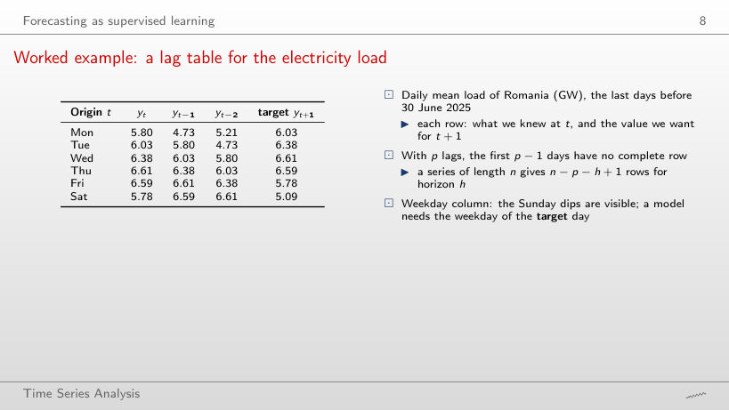
Worked example
Answer
9 − 5 − 3 + 1 = 2 rows, with origins 25 and 26 June 2025. On the whole series the table for h = 3 has 1642 − 28 − 3 + 1 = 1612 rows.
Electricity load: the series and three features
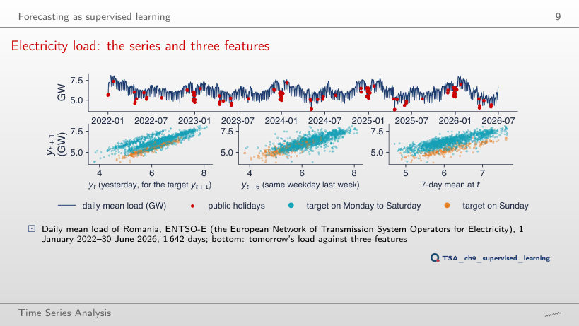
Answer
0.81 with yt (0.77 at h = 1) and 0.60 with the 7-day mean (0.74 at h = 1). At h = 7 today is the same weekday as the target, so yt takes the role of the weekly lag, while the 7-day mean carries no weekday.
Recursive, direct and multi-output forecasts
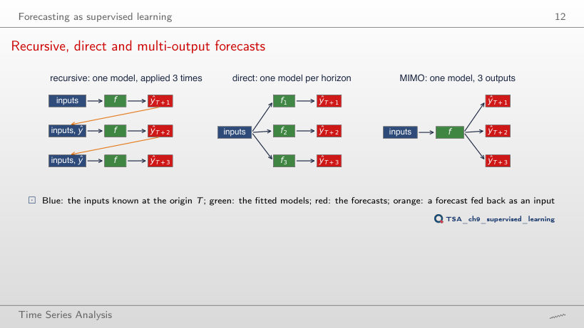
Answer
The direct one: 668 MW against 898 MW for the recursive one. At h = 7 the direct coefficient on yT is 0.81, the implied b⁷ only 0.15: iterating an AR(1) loses the weekly pattern, which the direct model keeps.
Worked example: recursive and direct two-step forecasts
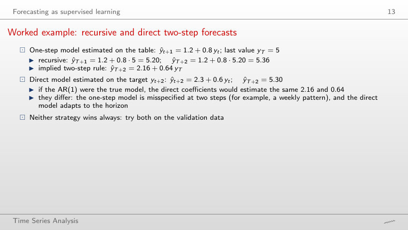
Worked example
Answer
The recursive one: 2.16 + 0.64·7 = 6.64, against 2.3 + 0.6·7 = 6.50 for the direct one. The two rules cross at yT = 3.5; above it the recursive rule, with the steeper slope, always gives more.
Validation without leakage
Four validation schemes
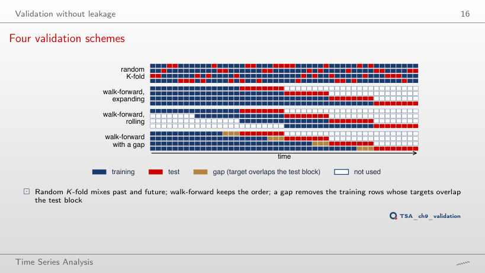
Answer
63% (25% at h = 3); 100% in random K-fold, 0% with a gap. The first h − 1 = 5 of the 8 rows of each test block have targets that overlap the last training rows.
Leakage in practice: random folds on overlapping targets
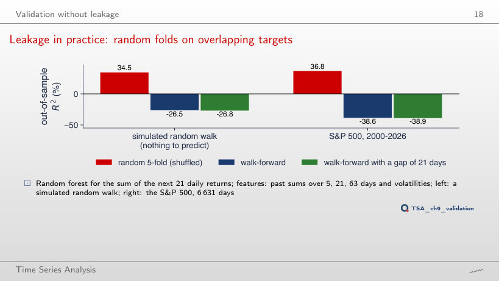
Answer
−4.5%, close to walk-forward (−6.3%) and to walk-forward with a gap (−6.1%). Without overlapping targets a test row has no near-copies in the training folds, and the 34.5% disappears.
Interpreting the leakage experiment
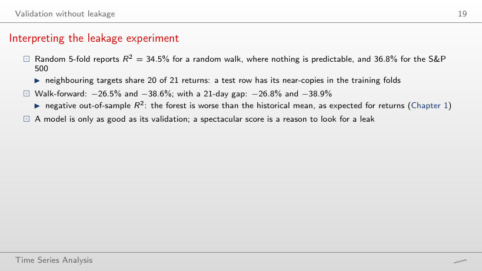
Worked example
Answer
43.4% and −43.6%. Neighbouring targets share 62 of 63 returns (sample correlation 0.976), so random folds leak even more. Without a gap walk-forward gives −36.2%: the last training rows have targets that overlap the first test rows, a small leak that the gap removes.
Bias and variance of regression trees
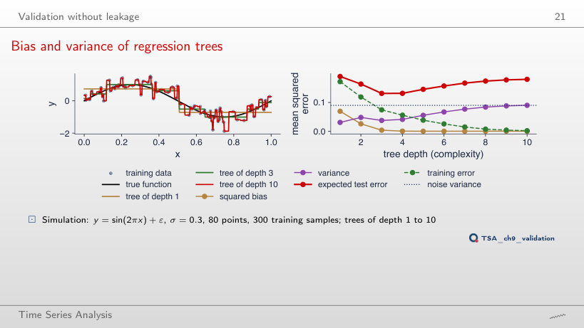
Answer
At depth 2 (0.465; the noise variance is 0.36). With σ = 0.1 the minimum moves to depth 6. More noise raises the variance of deep trees, so the right complexity falls.
Regularised linear models: ridge and lasso
Ridge and lasso
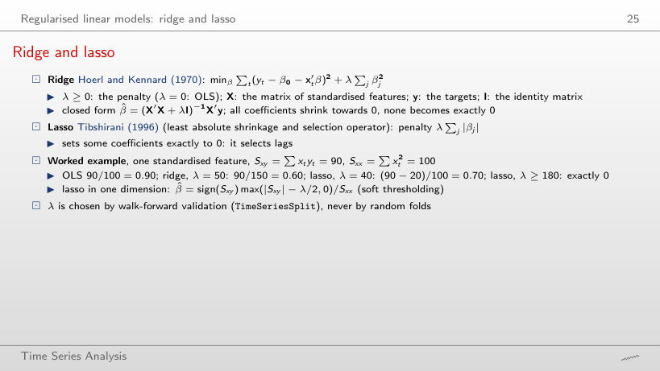
Worked example: ridge
Worked example: lasso
Answer
From λ = 2·30 = 60; ridge gives 30/150 = 0.200, not zero. The lasso threshold grows with |Sxy|: features weakly related to the target leave first.
Ridge and lasso paths on the load features
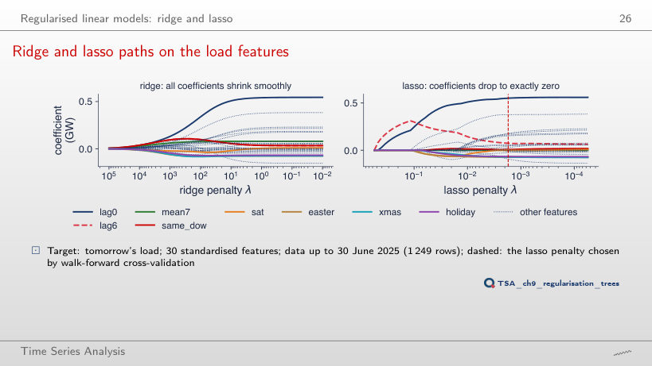
Answer
23 of 30 (22 on the data up to 30 June 2025), on 702 rows, with λ = 0.00486; the first features to enter are still lag6, lag0 and lag13.
Interpreting the coefficient paths
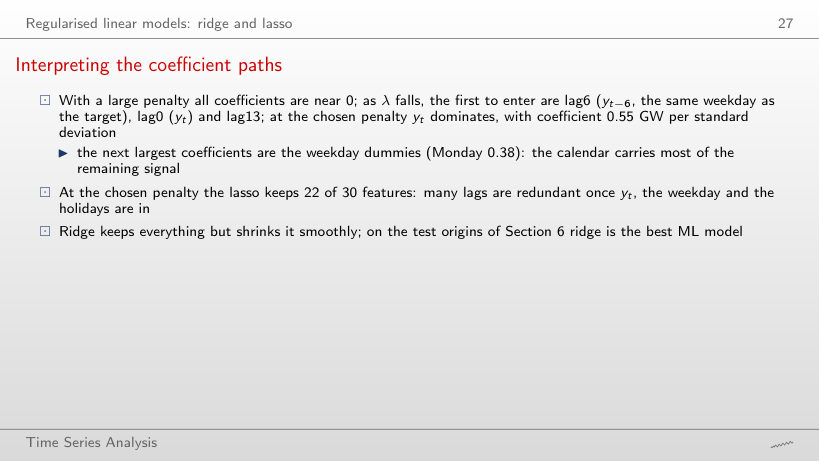
Answer
19 of 30, at λ = 0.00441 (22 at the chosen λ, 0.00173). The order of entry does not depend on the chosen λ: lag6, lag0, lag13.
Trees, random forest and gradient boosting
A depth-2 tree for tomorrow's load
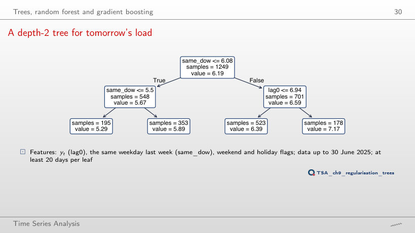
Answer
The feature stays same_dow and the threshold falls from 6.08 to 6.04 GW; the leaves become 5.27, 5.86, 6.37 and 7.17 GW, with 1613 days, and R² stays 0.64.
Gradient boosting
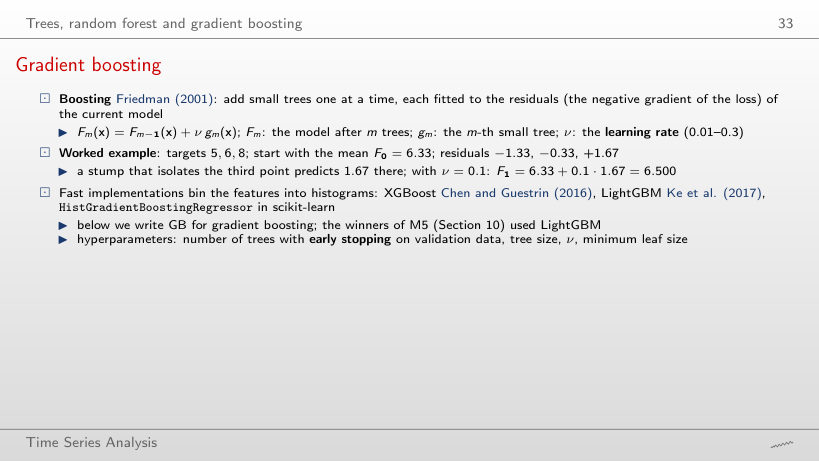
Worked example
Answer
5.50, 5.50 and 8.00: the first tree fully corrects the residual of the isolated point, and the training MSE falls from 1.56 to 0.167 after one tree. A large learning rate fits the training data fast, noise included.
One tree, a forest and boosting on the load
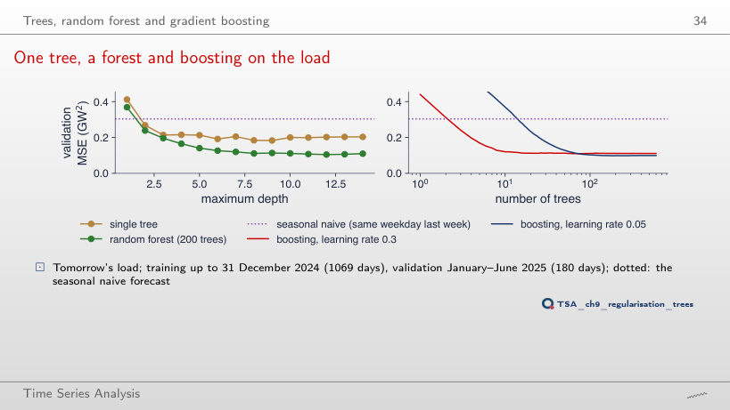
Answer
After 24 trees (MSE 0.093), against 72 in the lecture; with ν = 0.05 the minimum comes after 222 trees (0.092). On a shorter training sample fast boosting starts fitting noise earlier.
Trees cannot extrapolate: the Romanian price level
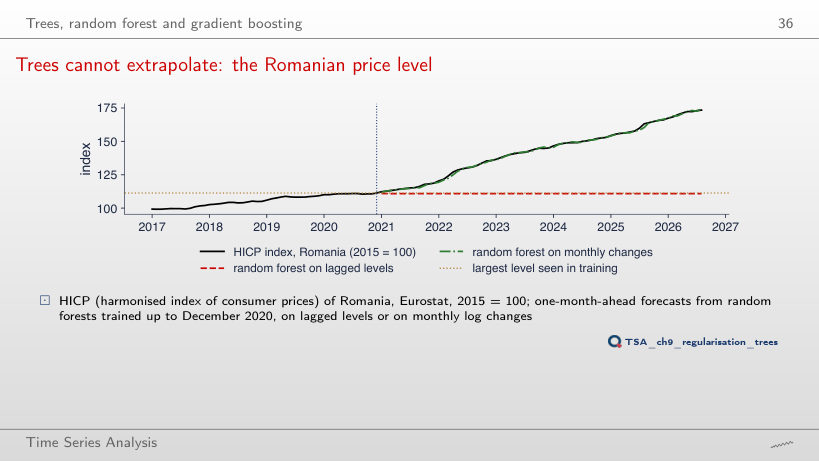
Answer
22.9 index points (36.9 with training up to 2020): the largest level seen is now 135.6, but the forecast stays capped at 134.1 while the index reaches 173.4. On monthly changes the RMSE is 0.68.
Permutation importance of gradient boosting
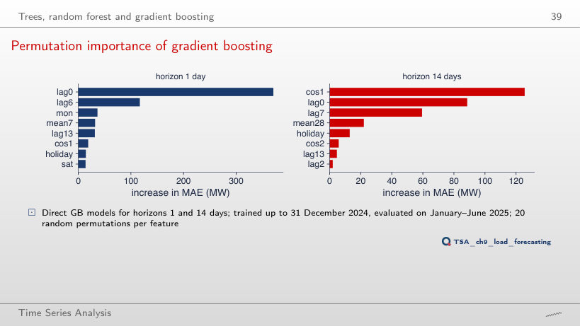
Answer
cos1 (+98 MW), followed by lag6 (+84 MW). At h = 7 lag0 still dominates (+317 MW), because at 7 days yt is the same weekday as the target.
Neural networks
A small network and its activation functions
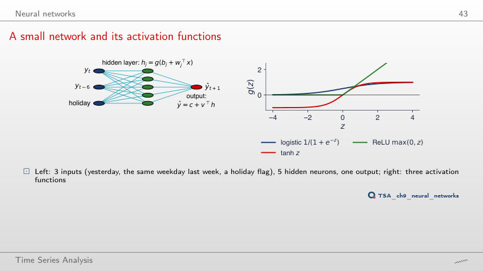
Answer
3·10 + 10 + 10 + 1 = 51. With 10 ReLU neurons the piecewise-linear function approximates tanh with maximum error 0.048, against 0.102 with 5.
A recurrent network and the LSTM cell
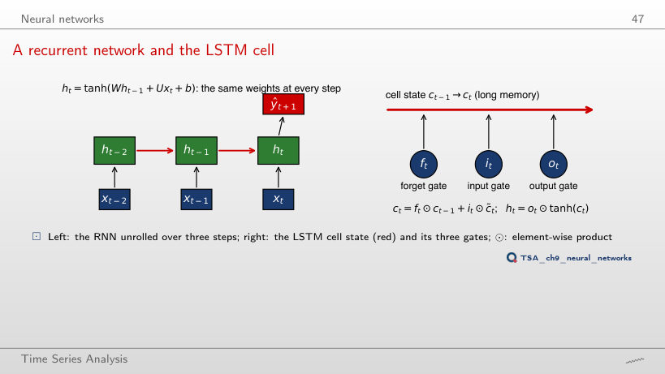
Answer
661 MW against 344 MW. The LSTM sees no holiday flag and repeats the weekly pattern over Easter, although its training loss falls from 0.951 to 0.210.
Application: electricity load against Chapter 4
The forecasting exercise
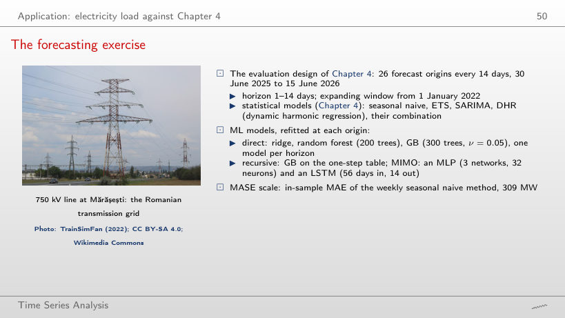
Worked example
Answer
The scale becomes 371 MW and the MASE 0.744 (309 MW and 0.894 with m = 7). Day-to-day differences are larger than week-to-week ones, because the step into the weekend changes the load; the scale moves the level, not the ranking of the models.
Results: 26 origins, 14 horizons
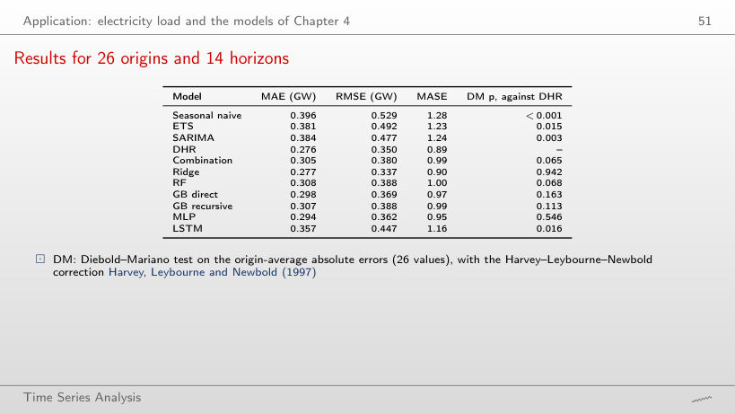
Answer
Yes: on 16 origins ridge has MASE 0.92 and DHR 0.93, and DM p = 0.791. Not significant means that the test does not separate the difference from noise, not that the models are equal.
MASE and accuracy by horizon
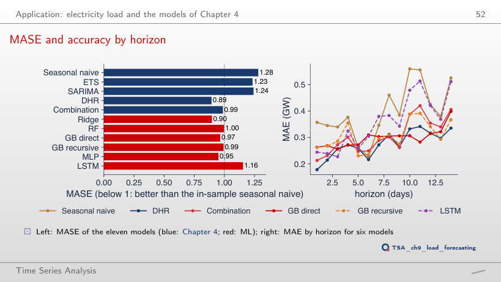
Answer
Still DHR (0.83), followed by ridge (0.86). The LSTM has 0.95 here, but over all 26 origins it rises to 1.16.
Interpreting the load results
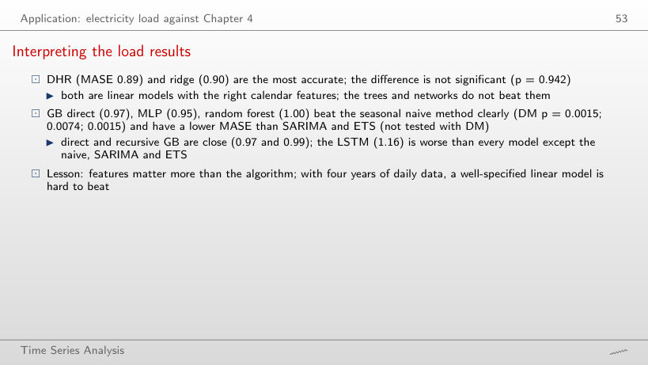
Worked example
Answer
0.953 (DM* = 0.060), against 0.942 without autocovariances: d̄ = 0.9 MW is small relative to its standard error, however the variance is estimated.
Forecasts around Orthodox Easter 2026
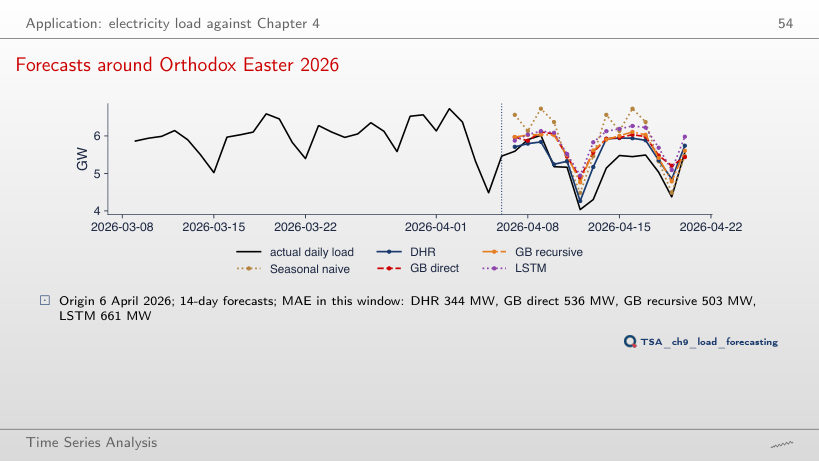
Answer
The MLP, with 255 MW; GB recursive has 260, GB direct 276, the seasonal naive 283, DHR 286 and the LSTM 398 MW. Without Easter in the window the differences between the models are small.
Prediction intervals
Quantile regression and the pinball loss
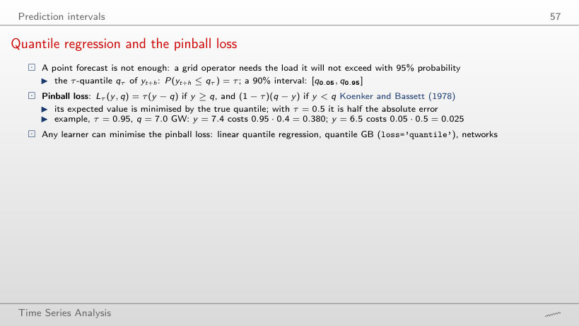
Worked example
Answer
0.200 and 0.250: with τ = 0.5 the loss is half the absolute error (0.4/2 and 0.5/2), and the minimum of the mean loss moves to the median of the 364 values.
Split conformal prediction
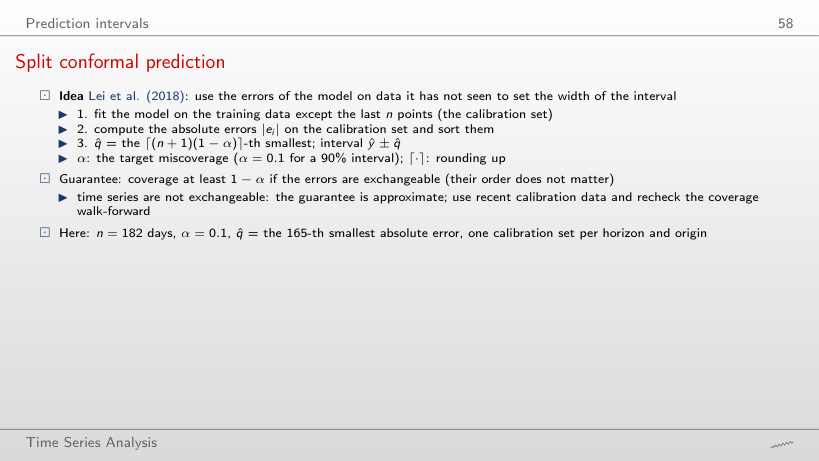
Worked example
Answer
k = ⌈183·0.5⌉ = 92 and q̂ = 175 MW for h = 1; the coverage over the 364 forecasts is 49.5%, with mean width 509 MW.
90% intervals for the load
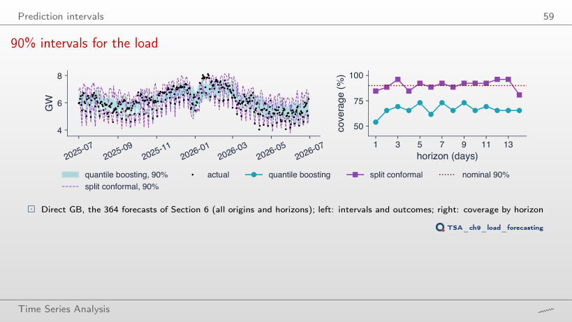
Answer
77.5%, with mean width 1000 MW: 13.7% of the outcomes fall below the interval and 8.8% above. Quantile GB stays at 66.5% for a nominal 90%.
Local and global models: Romanian inflation
Romanian inflation: forecasts and relative RMSE
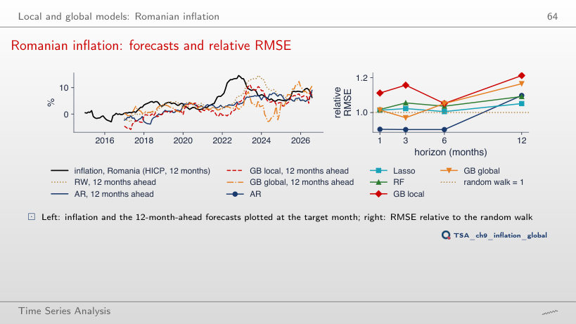
Answer
0.64 (1.21 over all origins), while GB global has 1.19. On the few origins of the disinflation after the 2022 peak the 12-month ranking reverses: a comparison on a few dozen errors is fragile.
Inflation results
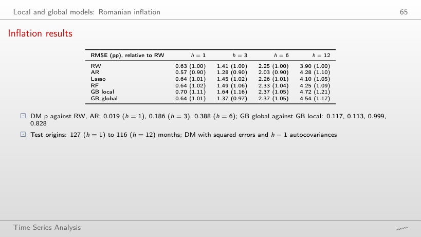
Answer
0.83 (0.88, 0.86, 0.83 and 0.98 at h = 1, 3, 6, 12): in the high-inflation years the AR stays below the random walk up to 6 months, while GB global has 1.10 at h = 6.
Applications in finance: volatility and the sign of returns
Results: S&P 500 and DAX, 2013–2026
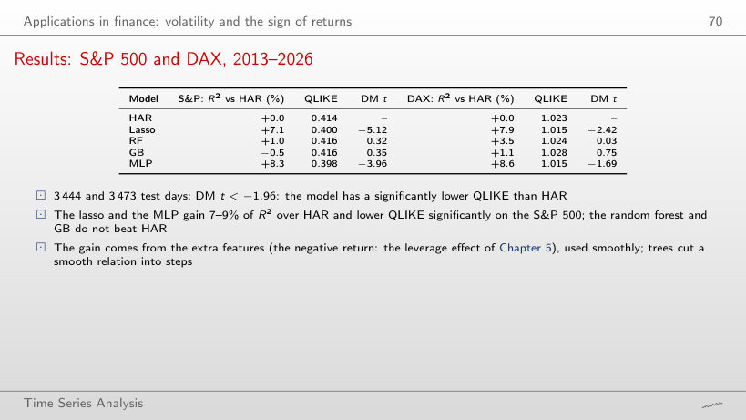
Answer
Yes: R² against HAR +7.4% and DM t = −3.42 on 1682 days; the MLP has +7.9% and t = −2.28.
Volatility forecasts in two storms
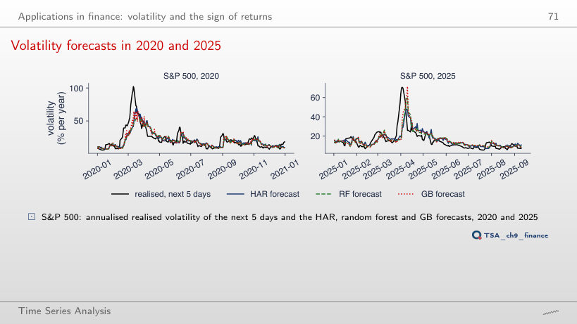
Answer
Yes, both: QLIKE 1.536 (lasso) and 1.541 (MLP), against 1.553 for HAR. In 2025 HAR has 0.990, below both (0.997 and 1.002): one year does not decide the ranking.
The sign of tomorrow's return: the right baseline
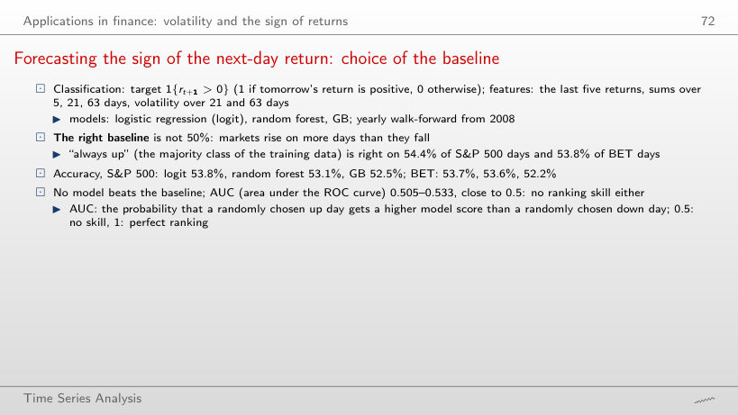
Answer
0.541, the smallest 0.507; the up days are 54.6% (S&P 500) and 55.7% (BET). AUC stays close to 0.5.
Accuracy against the baseline
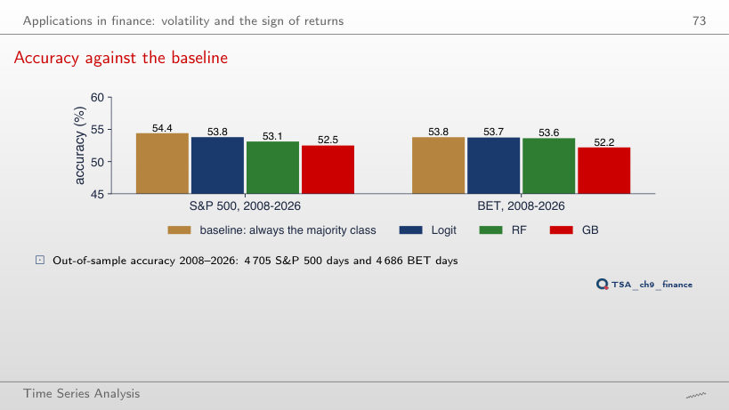
Answer
49.3%, below the 54.4% baseline: with the higher threshold the model forecasts “up” on only 40.4% of the days, while the market rises on 54.4% of them.
Landmark case studies: M4, M5 and Gu, Kelly and Xiu
M4: the accuracy of all methods
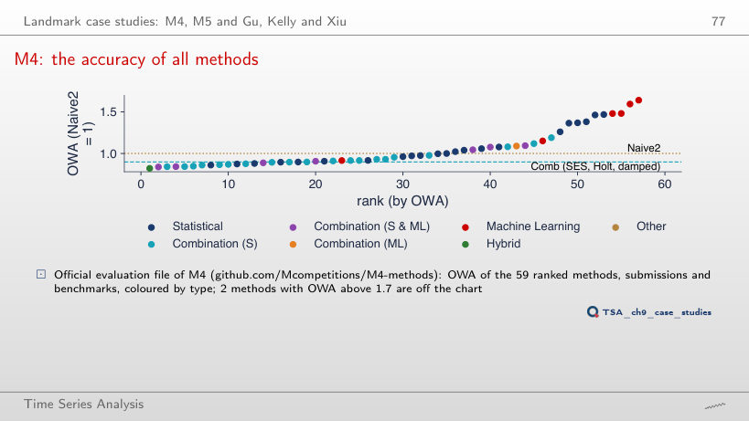
Answer
23rd (OWA 0.926), against 19th; the winner is still method 118, a hybrid, with 0.839, and the best pure ML method falls to rank 27.
Gu, Kelly and Xiu (2020): small R², large economic value
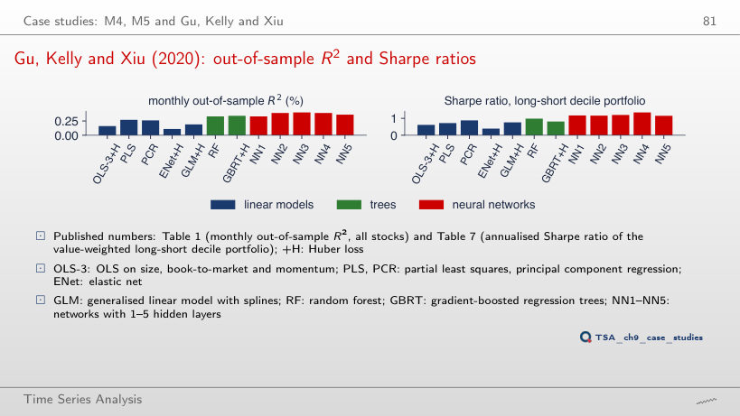
Answer
1.35/0.61 = 2.21 times, with a monthly R² of only 0.39%: a small predictability, used on thousands of stocks and months, supports a valuable portfolio.
Daily mean electricity load of Romania (ENTSO-E, the extract of Chapter 4, 1 January 2022 – 30 June 2026). Daily S&P 500, DAX and BET prices (data/market, up to 18 September 2026). The Romanian HICP index (Eurostat prc_hicp_minr), read with the chapter’s loader on 4 November 2026 and cut at August 2026, the last month of the slides; it reproduces the numbers of the lecture exactly. The official M4 evaluation file (ch9_m4_owa.csv) and the published numbers of Gu, Kelly and Xiu (2020). The walk-forward forecasts of the models (ch9_load_ml.csv, ch9_inflation.csv, ch4_load_cv.csv) and the estimates that need the models to be retrained (random forest, gradient boosting, MLP, LSTM, lasso) are those of the chapter code, with the same seed; the browser recomputes the lag tables, the correlations, the regression trees, MASE, the Diebold–Mariano tests, the coverage of the intervals, RMSE, QLIKE, accuracy and AUC. Variants that do not appear in the lecture (another horizon, another noise level, another sample end, another interval level, another threshold) are extra runs of the chapter code with the same data and seed; the AR(1) models of the strategies block and the approximation of tanh by ReLU neurons are extra computations made in the browser.